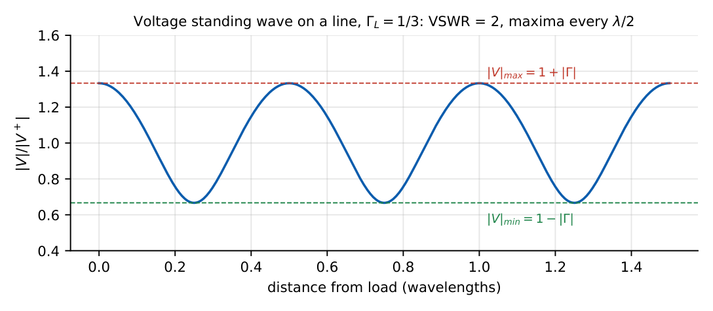
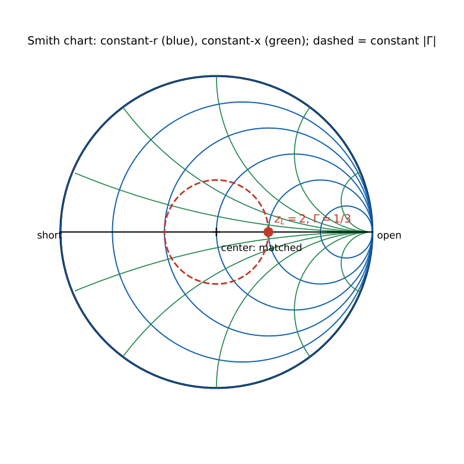

Transmission Lines
In this chapter
The heaviest-weighted chapter of the subject: \(Z_0\), \(\Gamma\), VSWR, input impedance, quarter-wave and stub matching, Smith-chart readings and S-parameters. Most questions are one or two steps with a clean number.
7.1 Transmission-line equations
A line is modelled per unit length by series \(R,L\) and shunt \(G,C\).
\(-\dfrac{dV}{dz}=(R+j\omega L)I\), \(\ -\dfrac{dI}{dz}=(G+j\omega C)V\). Solutions \(V=V^+e^{-\gamma z}+V^-e^{\gamma z}\), with
\[
\gamma=\alpha+j\beta=\sqrt{(R+j\omega L)(G+j\omega C)},\qquad Z_0=\sqrt{\dfrac{R+j\omega L}{G+j\omega C}}.
\]
Lossless (\(R=G=0\)): \(\gamma=j\omega\sqrt{LC}\), \(\beta=\omega\sqrt{LC}\), \(Z_0=\sqrt{L/C}\) (real), \(v_p=1/\sqrt{LC}\), \(\lambda=v_p/f\).
Distortionless line: \(R/L=G/C\) gives \(\alpha=R\sqrt{C/L}\), \(Z_0=\sqrt{L/C}\) and \(v_p=1/\sqrt{LC}\) independent of \(f\). Low-loss: \(\alpha\approx\frac R{2Z_0}+\frac{GZ_0}2\).
\(L=250\,\)nH/m, \(C=100\,\)pF/m: \(Z_0=\sqrt{\frac{2.5\times10^{-7}}{10^{-10}}}=50\,\Omega\), \(v_p=\frac1{\sqrt{2.5\times10^{-17}}}=2\times10^8\) m/s (\(\eps_{eff}=2.25\)).
7.2 Reflection coefficient, VSWR and input impedance
\(\Gamma_L=\dfrac{Z_L-Z_0}{Z_L+Z_0}\), \(\ \Gamma(d)=\Gamma_Le^{-j2\beta d}\) (magnitude unchanged on a lossless line).
\(\mathrm{VSWR}=s=\dfrac{V_{max}}{V_{min}}=\dfrac{1+|\Gamma|}{1-|\Gamma|}\), \(\ s\in[1,\infty)\); \(|\Gamma|=\dfrac{s-1}{s+1}\). \(\ \mathrm{RL}=-20\log|\Gamma|\) dB (return loss).
Input impedance: \(Z_{in}(d)=Z_0\dfrac{Z_L+jZ_0\tan\beta d}{Z_0+jZ_L\tan\beta d}=Z_0\dfrac{1+\Gamma(d)}{1-\Gamma(d)}\).
At a voltage maximum \(Z_{in}=sZ_0\) (real); at a voltage minimum \(Z_{in}=Z_0/s\). Maxima and minima repeat every \(\lambda/2\), and are \(\lambda/4\) apart.

Matched \(Z_L=Z_0\): \(\Gamma=0\), \(s=1\), \(Z_{in}=Z_0\). Short: \(\Gamma=-1\), \(Z_{in}=jZ_0\tan\beta d\). Open: \(\Gamma=+1\), \(Z_{in}=-jZ_0\cot\beta d\). Purely reactive load: \(|\Gamma|=1\), \(s=\infty\), no power absorbed.
Half-wave line (\(d=\lambda/2\)): \(Z_{in}=Z_L\). Quarter-wave line: \(Z_{in}=\dfrac{Z_0^2}{Z_L}\) (a short looks like an open and vice versa).
\(Z_0=50\,\Omega\), \(Z_L=100\,\Omega\): \(\Gamma=\frac{50}{150}=\frac13\), \(s=2\), RL \(=9.5\) dB. A shorted \(\lambda/8\) line: \(Z_{in}=j50\tan45^\circ=j50\,\Omega\). A shorted \(\lambda/4\) line looks like an open circuit.
7.3 Power and impedance matching
Power delivered to the load \(P_L=\frac{|V^+|^2}{2Z_0}(1-|\Gamma|^2)\). Maximum power transfer needs \(Z_L=Z_0^*\) (matched). A load can be matched to \(Z_0\) using:
Quarter-wave transformer (real \(Z_L\)): a \(\lambda/4\) section with \(Z_T=\sqrt{Z_0Z_L}\) gives \(Z_{in}=Z_0\). For complex \(Z_L\) place the transformer at a voltage maximum or minimum, where the impedance is real (\(sZ_0\) or \(Z_0/s\)).
Single stub: a short- or open-circuited stub of length \(\ell\) in parallel at distance \(d\) from the load where \(y_{in}=1\pm jb\); the stub supplies \(\mp jb\). Shorted stubs are preferred (open stubs radiate).
Double stub and lumped \(L\)-sections are other options; bandwidth is limited because the electrical lengths change with frequency.
Match a \(200\,\Omega\) load to a \(50\,\Omega\) line with a \(\lambda/4\) transformer: \(Z_T=\sqrt{50\times200}=100\,\Omega\).
7.4 Smith chart

The Smith chart maps normalized impedance \(z=Z/Z_0=r+jx\) onto the \(\Gamma\)-plane via \(\Gamma=\frac{z-1}{z+1}\). Key facts:
- Centre: \(z=1\) (matched, \(\Gamma=0\)). Left end: short circuit (\(z=0\), \(\Gamma=-1\)). Right end: open (\(z=\infty\), \(\Gamma=+1\)). The outer circle is \(|\Gamma|=1\).
- Upper half plane: inductive (\(x>0\)); lower half: capacitive (\(x<0\)).
- Moving toward the generator rotates clockwise; one full revolution is \(\lambda/2\); the angle on the wavelengths-toward-generator scale is \(2\beta d\).
- A \(\lambda/4\) move is a half revolution: \(z\to1/z\) (an admittance reading). The point diametrically opposite \(z\) is \(y=1/z\).
- The constant-\(|\Gamma|\) circle through \(z_L\) intersects the real axis at \(s\) (right) and \(1/s\) (left): the VSWR can be read from the right intersection.
The reflection circle through \(z_L=2\) (\(\Gamma=1/3\)) meets the real axis at \(s=2\) on the right.
7.5 S-parameters
For a two-port with incident waves \(a_1,a_2\) and outgoing waves \(b_1,b_2\): \(b_1=S_{11}a_1+S_{12}a_2\), \(b_2=S_{21}a_1+S_{22}a_2\).
\(S_{11}=\dfrac{b_1}{a_1}\Big|_{a_2=0}\) (input reflection, port 2 matched), \(S_{21}=\dfrac{b_2}{a_1}\Big|_{a_2=0}\) (forward transmission/gain), \(S_{22}\), \(S_{12}\) similarly.
Reciprocal network: \(S_{12}=S_{21}\). Symmetric: \(S_{11}=S_{22}\). Lossless: \(|S_{11}|^2+|S_{21}|^2=1\) (matrix unitary). Insertion loss \(=-20\log|S_{21}|\) dB; return loss \(=-20\log|S_{11}|\) dB.
A matched, lossless, reciprocal three-port cannot exist; a matched lossless four-port (directional coupler) can.
(i) \(Z_0\) of a lossless line is real, independent of length and frequency. (ii) Moving toward the generator is clockwise on the Smith chart; toward the load is anticlockwise. (iii) \(|\Gamma|\) does not change along a lossless line, only its phase. (iv) VSWR \(=1\) is a perfect match; \(\infty\) is total reflection. (v) Impedance repeats every \(\lambda/2\), not \(\lambda/4\).
Compute \(\Gamma_L\) first, then \(s\), then everything else follows from \(|\Gamma|\). Quarter-wave: \(Z_{in}Z_L=Z_0^2\). For a complex \(Z_L\), a quarter-wave transformer at a voltage extremum sees \(sZ_0\). On the Smith chart think of the \(\Gamma\) circle as a clock hand rotating at \(4\pi d/\lambda\).
7.6 GATE problems
Q1. A lossless line has \(L=250\,\)nH/m and \(C=100\,\)pF/m. \(Z_0=\) (A) 25 \(\Omega\) (B) 50 \(\Omega\) (C) 75 \(\Omega\) (D) 100 \(\Omega\).
Q2. The input impedance of a \(\lambda/4\) line terminated in \(Z_L\) is (A) \(Z_L\) (B) \(Z_0^2/Z_L\) (C) \(Z_0\) (D) \(Z_LZ_0\).
Q3. A \(\lambda/4\) line terminated in a short circuit appears as (A) a short (B) an open circuit (C) \(Z_0\) (D) a capacitor.
Q4. \(\Gamma\) for a matched load is (A) 1 (B) \(-1\) (C) 0 (D) \(\infty\).
Answers: Q1 (B). Q2 (B). Q3 (B). Q4 (C).
Q5. \(Z_0=50\,\Omega\), \(Z_L=100\,\Omega\). \(\Gamma_L\) and VSWR are (A) \(1/3\), 2 (B) \(1/2\), 3 (C) \(1/3\), 3 (D) \(2/3\), 5.
Q6. To match a \(200\,\Omega\) load to a \(50\,\Omega\) line with a quarter-wave transformer the transformer impedance is (A) 75 \(\Omega\) (B) 100 \(\Omega\) (C) 125 \(\Omega\) (D) 150 \(\Omega\).
Q7. The input impedance of a short-circuited \(50\,\Omega\) lossless line of length \(\lambda/8\) is (A) 0 (B) \(j50\,\Omega\) (C) \(-j50\,\Omega\) (D) \(\infty\).
Answers: Q5 (A). Q6 (B): \(\sqrt{50\cdot200}\). Q7 (B): \(jZ_0\tan(\pi/4)\).
Q8. VSWR \(=3\): \(|\Gamma|=\) .
Q9. Return loss (dB) for \(|\Gamma|=0.1\): .
Q10. Phase velocity (\(\times10^8\) m/s) on the line of \(L=250\,\)nH/m, \(C=100\,\)pF/m: .
Answers: Q8: \(\frac{3-1}{3+1}=0.5\). Q9: \(20\). Q10: \(2.0\).
Q11. A lossless line is terminated in a purely reactive load. Then (A) \(|\Gamma|=1\) (B) VSWR is infinite (C) no average power is absorbed by the load (D) \(\Gamma=0\).
Answers: Q11: (A), (B), (C).
T1. \(Z_{in}\) of an open line of length \(\lambda/8\)? T2. Distortionless condition? T3. Direction of motion on the Smith chart toward the generator?
Answers: T1: \(-jZ_0\). T2: \(R/L=G/C\). T3: clockwise.
- \(Z_0=\sqrt{L/C}\), \(v_p=1/\sqrt{LC}\), \(\gamma=\sqrt{(R+j\omega L)(G+j\omega C)}\); distortionless \(R/L=G/C\).
- \(\Gamma_L=\frac{Z_L-Z_0}{Z_L+Z_0}\), \(s=\frac{1+|\Gamma|}{1-|\Gamma|}\), RL \(=-20\log|\Gamma|\).
- \(Z_{in}=Z_0\frac{Z_L+jZ_0\tan\beta d}{Z_0+jZ_L\tan\beta d}\); \(\lambda/4\): \(Z_0^2/Z_L\); \(\lambda/2\): \(Z_L\).
- Short \(jZ_0\tan\beta d\); open \(-jZ_0\cot\beta d\); matching \(Z_T=\sqrt{Z_0Z_L}\).
- Smith chart: clockwise toward generator, \(\lambda/2\) per turn, \(\lambda/4\Rightarrow y=1/z\); S-parameters \(S_{11}=\Gamma_{in}\), lossless \(\sum|S|^2=1\).